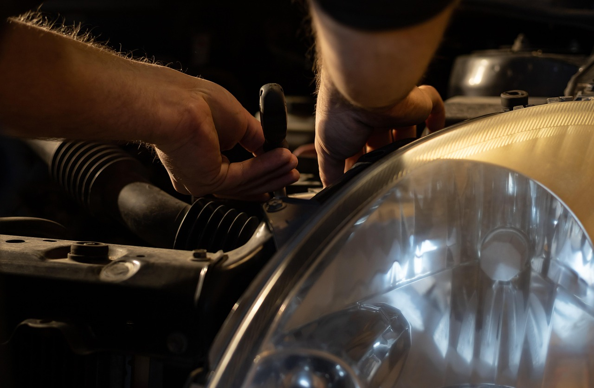
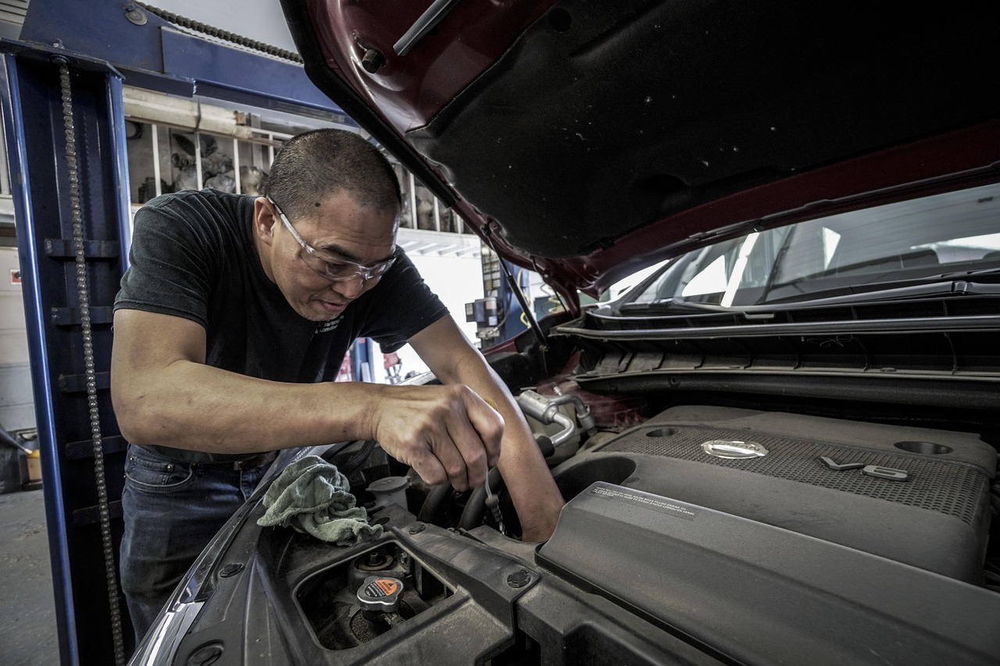

Manutenção e reparo
Serviços de manutenção e reparação mecânica de veículos, a atividade registrada da empresa.

Oficina mecânica na Caiuca, Caruaru
Oficina mecânica na Caiuca, com atendimento de segunda a sábado.
Foto ilustrativa (Pixabay). No site final entram as fotos da oficina.
Serviços
Esta prévia usa só informações públicas da oficina. No site final, a Automec escolhe os serviços que quer destacar.
Serviços de manutenção e reparação mecânica de veículos, a atividade registrada da empresa.
Durante a semana, manhã e tarde; no sábado, pela manhã.
Telefone (81) 3721-3639 e e-mail oficina.automec@hotmail.com.

A oficina
A Automec Serviços fica na Avenida Leão Dourado, 732, no bairro Caiuca, em Caruaru.
O telefone publicado é o (81) 3721-3639 e o e-mail oficina.automec@hotmail.com.
Os botões de WhatsApp desta prévia usam o telefone publicado; no site final, vocês confirmam qual número atende no WhatsApp.
Não incluímos preços nem depoimentos: só dados públicos. As fotos desta prévia são ilustrativas, de banco de imagens gratuito.
Quando ir
Horários publicados no perfil da oficina no Google.
A oficina fica na Avenida Leão Dourado, no bairro Caiuca, em Caruaru.
Onde estamos
Av. Leão Dourado, 732 · Caiuca, Caruaru - PE, 55034-190
Dúvidas
Ligue para (81) 3721-3639 e informe o modelo do carro e o problema.
De segunda a sexta, das 8h às 12h e das 14h às 18h; no sábado, das 8h às 12h, conforme o Google.
Av. Leão Dourado, 732 · Caiuca, Caruaru - PE, 55034-190. Veja o mapa nesta página ou peça a localização pelo WhatsApp.
Ligue ou chame no WhatsApp, diga o modelo do carro e o serviço que você precisa.